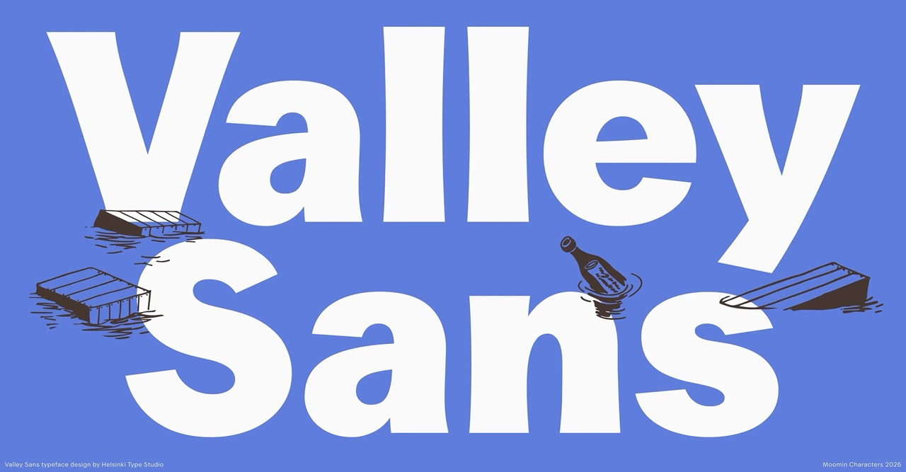
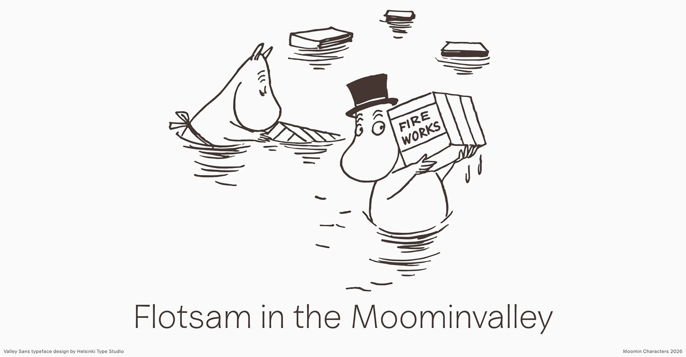
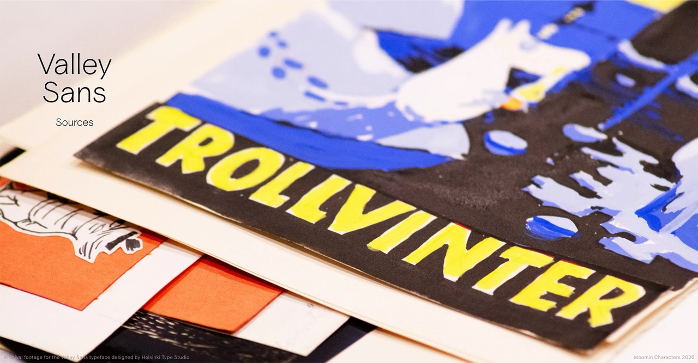
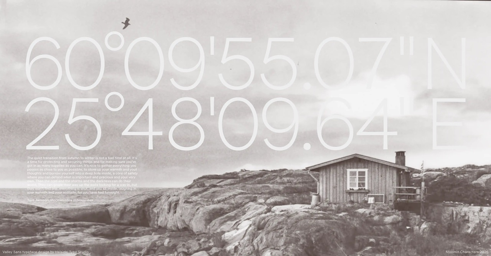
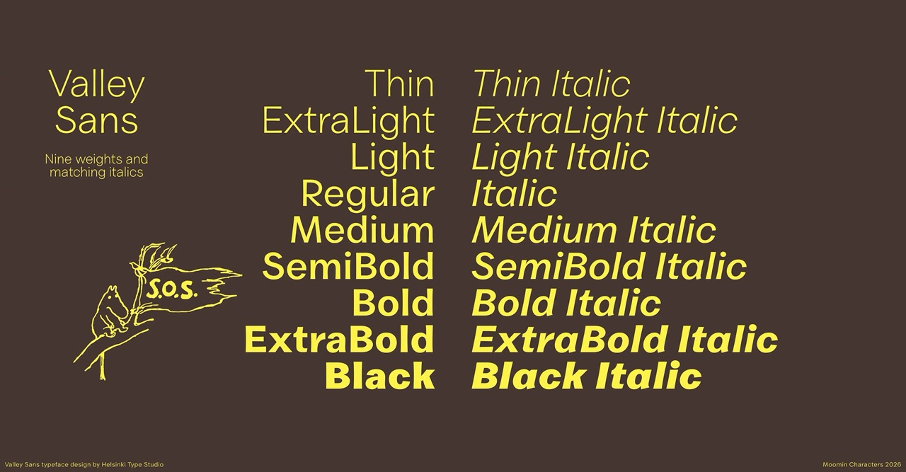
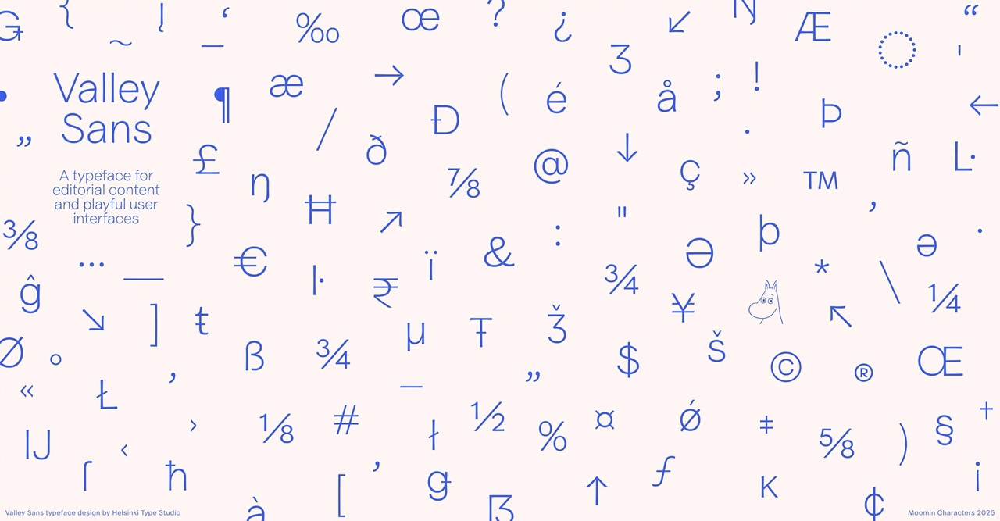
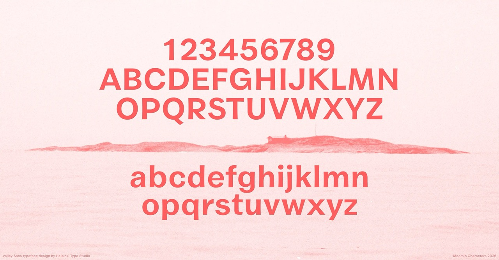
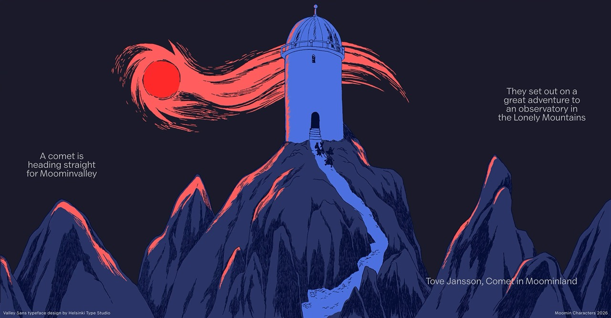

Valley Sans is a clear, versatile typeface intended to work with editorial content, as well as lending a warm charm to user interfaces.
To contribute, see github.com/HelsinkiTypeStudio/valley-sans.

The Moomins are beloved characters created by Tove Jansson, known for wit, warmth, and charm. Valley Sans translates that spirit into a contemporary type system for brand communication, publishing, and digital interfaces while preserving a distinct connection to the Moomin visual world.

The design of the typeface draws from Tove Jansson's original lettering, the typographic landscape of her era, and details from life in the Finnish archipelago.
Tove Jansson produced a plethora of lettering in many styles. The sans serif work is sturdy and often includes slightly flared terminals, which gave a very clear direction for Valley Sans. However the sans serif lettering is always uppercase.

To build a complete contemporary family, the lowercase and broader stylistic system were complemented with compatible historical models. The design team focused on late-1800s American modern gothic typefaces, chosen for their suitable warmth, practicality, and expressive charm, and also because of a surprising oblique connection to the Moomins.

In the Finnish archipelago, where Jansson spent most summers, cargo crates and other branded pieces of driftwood have washed ashore over time. This inspired the idea of transatlantic flotsam, where distant typographic influences arrive by sea and settle into local visual culture, becoming part of the conceptual foundation of Valley Sans.
The result is a typeface rooted in heritage and storytelling, designed for clarity, rhythm, and usability across styles.

Valley Sans is delivered as a variable-weight family, covering styles from Thin to Black in both roman and italic. This structure provides a broad expressive range while keeping behaviour consistent across editorial and interface contexts.

The family is currently developed for Latin-script use and is intended to support a wide range of contemporary brand and publishing needs in digital and print environments.


Valley Sans was designed for Moomin Characters by Niklas Ekholm and Lari Mörö at Helsinki Type Studio. Images courtesy of Moomin Characters Ltd.